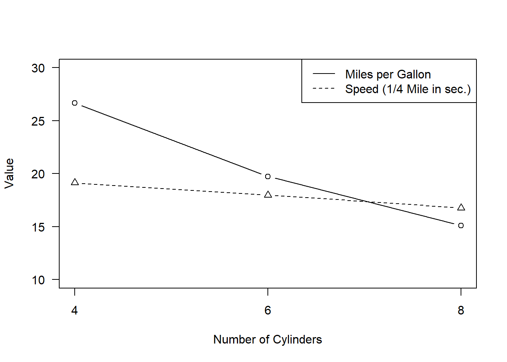
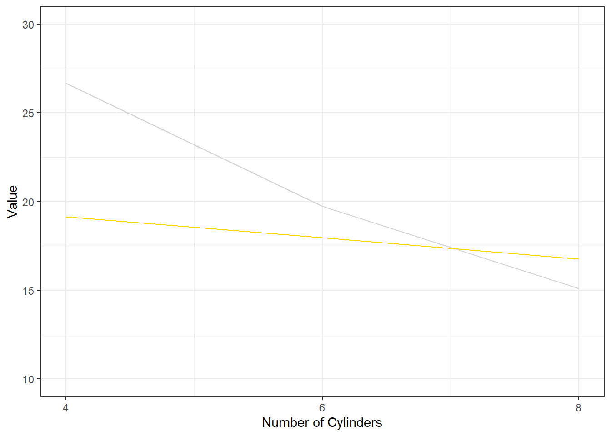
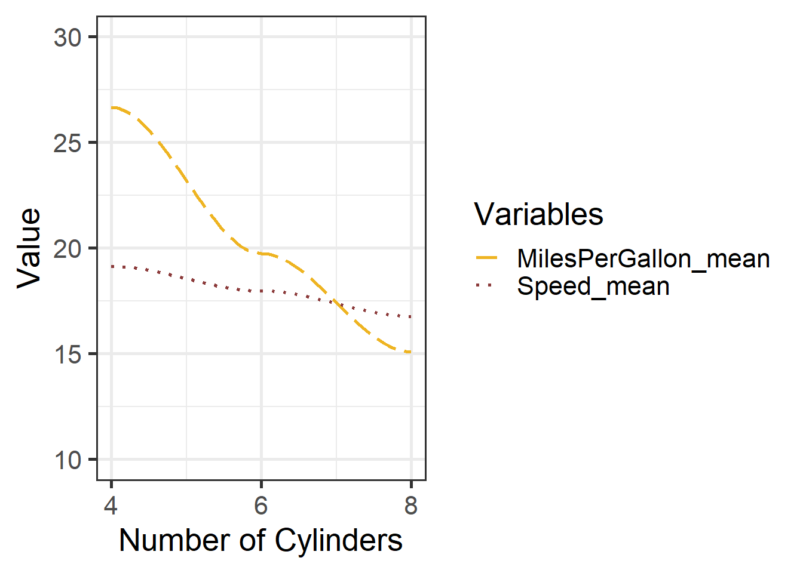
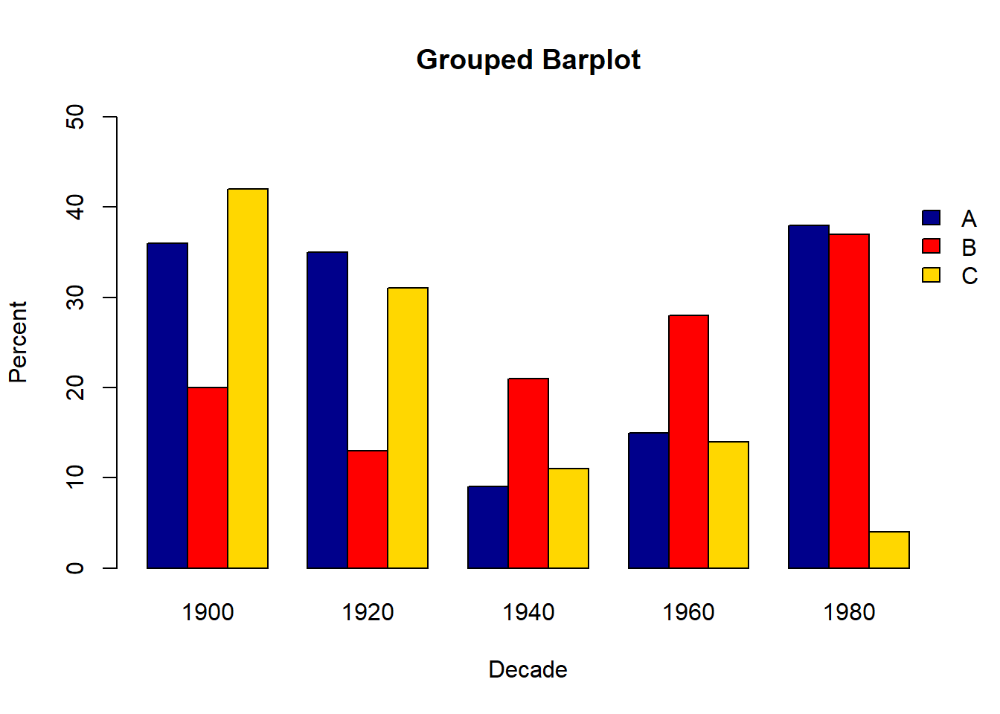
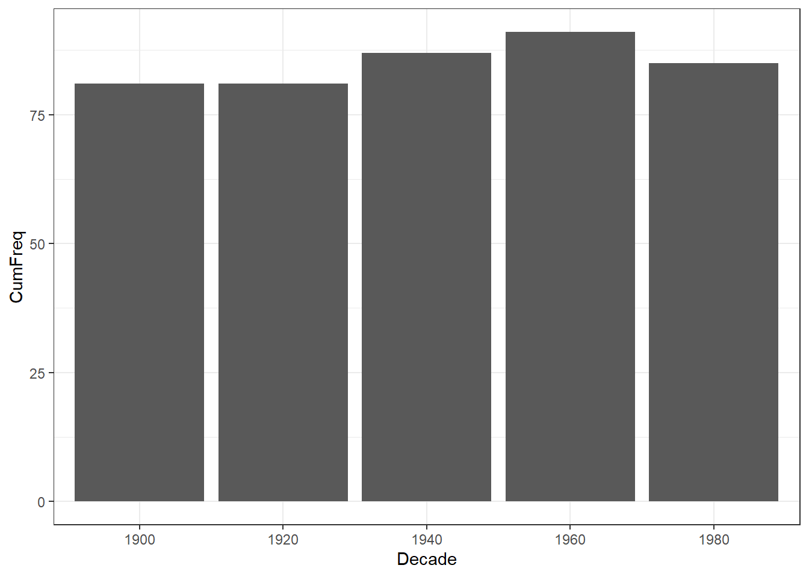
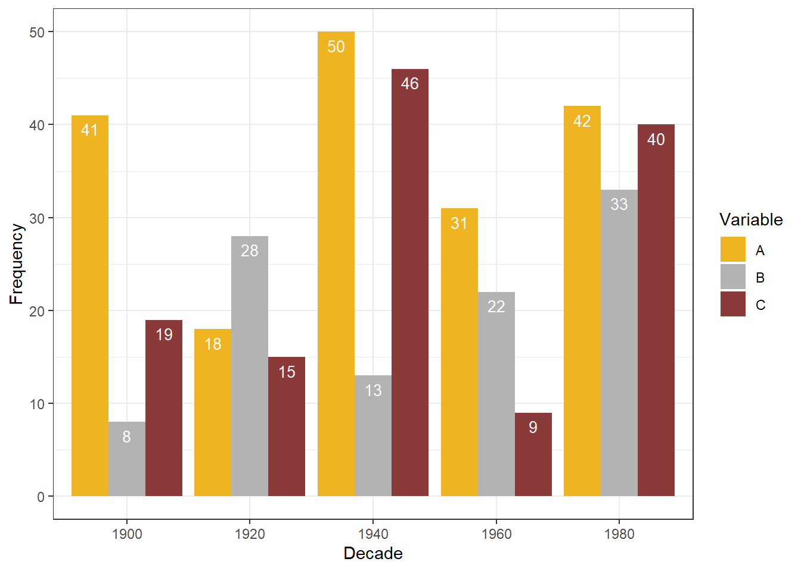
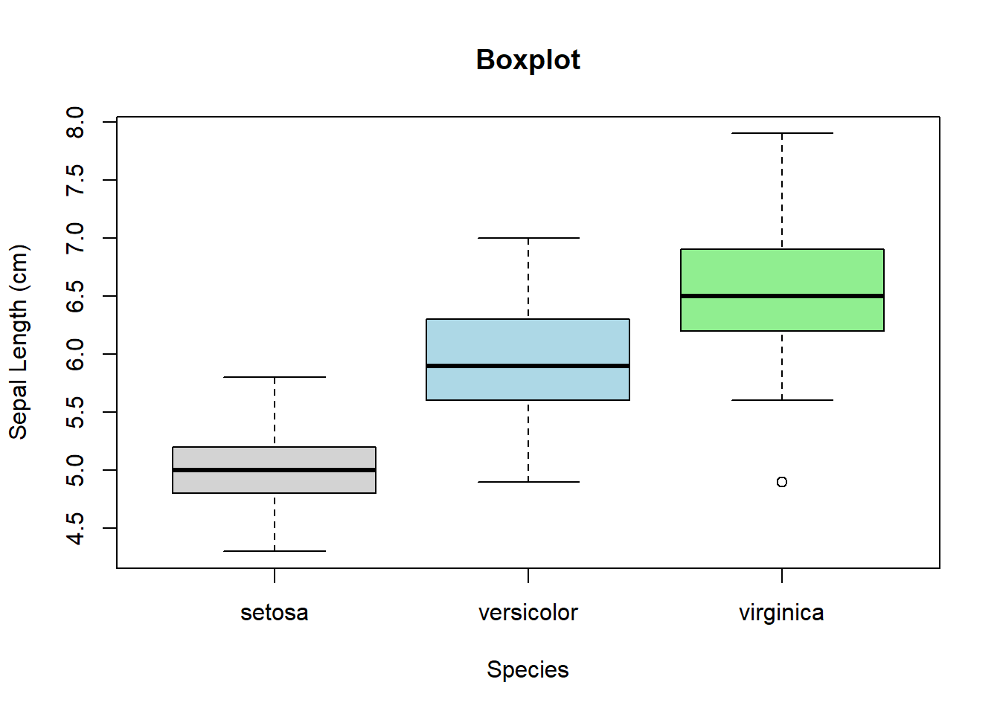
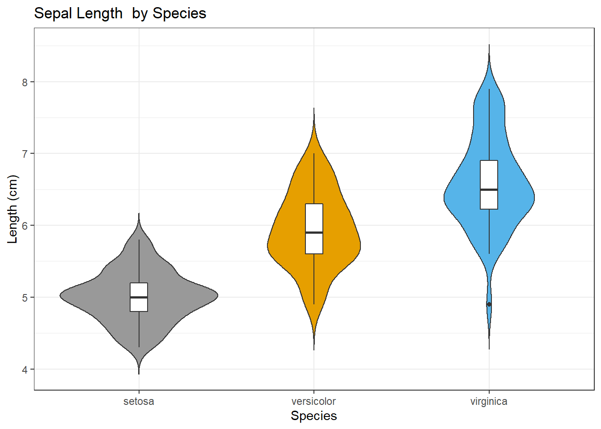

Basic data visualization using R
UQ SLC Digital Team
2019-07-16

1 Introduction
This section focuses on data vizualization using “R”. The entire code for the sections below can be downloaded here.
The following deals with data visualization in “R”. When it comes to data visualization, “R” offers a myriad of options and ways to show and summarize data. Before addressing practical issues, rather genral questions relating to what needs to be kept in mind when visualizing data, e.g. axes labelling, and it exemplifies different types of graphs (scatter plot, line graphs, bar-charts, histograms, pie charts, box-plot), are discussed. In addition, the pros and cons of different types of graphs are discussed and the steps and procedures to set up graphs are shown so that you can re-create the graphs at home. The practical part also focuses on potential problems you may encounter when setting up a graph. The graphs are plotted in R as it is a very flexible tool for visualization and offers more control over the distinct layers of plots.
As there exists a multitude of different ways to visualize data, this section can only highlight the most common types of visualization. Each type of visualization (or graph or plot) is briefly introduced followed by code which produces the type of visualization in R. This section focuses on using R when dealing with plots because R is extremely flexible when it comes to creating graphics. R is flexible in the sense that one can produce not only a huge variety of different types of visualization in R but also to modify these visualizations to match one’s individual needs. In addition, a major advantage of using R consists in the fact that the code can be store, distributed, and run very easily. This means that R represents a framework for creating graphs that enables sustainable, reproducible, and transparent procedures.
2 Basic Considerations about Visualizations
Before turning to the practical issues relating to creating graphs, a few words on what one has to keep in mind when visualizing data are in order. On a very general level, graphs should be used to inform the reader about properties and relationships between variables. This implies that…
- graphs, including axes, must be labelled properly to allow the reader to understand the visualization with ease.
- visualizations should not use more dimensions than the data has that is visualized.
- all elements within a graph should be unambiguous.
- variable scales should be portrayed accurately (for instance, lines - which imply continuity - should not be used for categorically scaled variables).
- graphs should be as intuitive as possible.
3 Graphics with R
A few words on different frameworks for creating graphics in R are in order. There are three frameworks in which to create graphics in R. The basic framework, the lattice framework, and the ggplot or tidyverse framework.
The basic framework is the oldest of the three and is included in the “base”-package that is automatically activated when entering R. The idea behind the “base” environment is that the creation of graphics is seen in analogy to a painter who paints on an empty canvass. Each line or element is added to the graph consecutively which oftentimes leads to code that is very comprehensible but also very long.
The “lattice” environment was a follow-up to the “base”-package and it complemented it insofar as it made it much easier to display various variables and variable levels simultaneously. The philosophy of the “lattice”-package is quite different from the philosophy in the “base”-package: Whereas everything had to be specified in “base”, the graphs created in the “lattice” environment require only very little code but are therefore very easily created when one is satisfied with the design but vey labour intensive when it comes to customizing graphs. However, the “lattice” package is very handy when summarizing relationships between multiple variable and variable levels.
The “ggplot” environment was written by Hadley Wickham and it combines the positive aspects of both the “base” and the “lattice” package. It was first publicized in the “gplot” and “ggplot1” packages but the latter was soon repackaged and improved in the now most widely used package for data visualization: the “ggplot2” package. The “ggplot”-environment implements a philosophy of graphic design described in builds on The Grammar of Graphics by Leland Wilkinson ((Wilkinson 2006)).
The philosophy of “ggplot2” is to consider graphics as consisting out of basic elements (called aesthetics and they include, for instance, the data set to be plotted and the axes) and layers that overlayed onto the aesthetics. The idea of the “ggplot2” package can eb summarized as taking “care of many of the fiddly details that make plotting a hassle (like drawing legends) as well as providing a powerful model of graphics that makes it easy to produce complex multi-layered graphics.”
In the following, the graphs are initially created in the “base” environment while “lattice” and “ggplot” graphs, if appropriate, are shown after the basic display.
3.1 Preparation
The following sections briefly introduce some common types of data visualizations. As all examples will be performed in “R”, it is necessary to install “R”, “RStudio”, and “Tinn-R”. If these programms (or, in the case of “R”, environments) are not installed already, please search for them in your favorite serach engine and add the term “download”. Open any of the first few links and follow the installation instructions (they are easy to follow, do not require any specifications, and are pretty much self-explanatory).
In addition, certain “libraries” need to be installed so that the scripts shown below are executed without errors. Before turning to the code below, please install the libraries needed for running the code below. If you have already installed the libraries mentioned below, then you can skip ahead ignore this section. To install the necessary libraries, simply run the following code - it may take some time (between 1 and 5 minutes to install all of the libraries so you do not need to worry if it takes some time).
# clean current workspace
rm(list=ls(all=T))
# set options
options(stringsAsFactors = F)
# install libraries
install.packages(c("lattice", "ggplot2", "dplyr", "likert",
"scales", "vcd", "tm", "wordcloud",
"stringr", "SnowballC"))Once you have installed “R”, “R-Studio”, “Tinn-R”, and have also initiated the session by executing the code shown above, you are good to go.
3.2 Data sets
Before turning to the graphs, we will briefly look at the structures of the data sets to what we are working with. In this chapter, we will mostly use inbuild data sets that are provided by R and already loaded when entering R. The data sets are called “iris” and “mtcars”. The “iris” data set contains information about “measurements in centimetres of the variables sepal length and width and petal length and width, respectively, for 50 flowers from each of 3 species of iris. The species are Iris Setosa, versicolor, and virginica” (cf. (Becker, Chambers, and Wilks 1988); (Anderson 1935); (Fisher 1936)). In a first step, we attach the “iris” data so that we only need to write the variable names without having to repeat the name of the data set. Then, we inspect the structure of the “iris” data using the “str()” command.
# attach iris
attach(iris)
# inspect iris data
str(iris) ## 'data.frame': 150 obs. of 5 variables:
## $ Sepal.Length: num 5.1 4.9 4.7 4.6 5 5.4 4.6 5 4.4 4.9 ...
## $ Sepal.Width : num 3.5 3 3.2 3.1 3.6 3.9 3.4 3.4 2.9 3.1 ...
## $ Petal.Length: num 1.4 1.4 1.3 1.5 1.4 1.7 1.4 1.5 1.4 1.5 ...
## $ Petal.Width : num 0.2 0.2 0.2 0.2 0.2 0.4 0.3 0.2 0.2 0.1 ...
## $ Species : Factor w/ 3 levels "setosa","versicolor",..: 1 1 1 1 1 1 1 1 1 1 ...The “iris” data contains four numeric variables (Sepal.Length, Sepal.Width, Petal.Length, Petal.Width) which contain the values for sepal length and width as well as petal length and width. In addition, the data contains a factor or categorical variable (Species) which denotes the flower species.
# attach iris
attach(mtcars)
# inspect iris data
str(mtcars) ## 'data.frame': 32 obs. of 11 variables:
## $ mpg : num 21 21 22.8 21.4 18.7 18.1 14.3 24.4 22.8 19.2 ...
## $ cyl : num 6 6 4 6 8 6 8 4 4 6 ...
## $ disp: num 160 160 108 258 360 ...
## $ hp : num 110 110 93 110 175 105 245 62 95 123 ...
## $ drat: num 3.9 3.9 3.85 3.08 3.15 2.76 3.21 3.69 3.92 3.92 ...
## $ wt : num 2.62 2.88 2.32 3.21 3.44 ...
## $ qsec: num 16.5 17 18.6 19.4 17 ...
## $ vs : num 0 0 1 1 0 1 0 1 1 1 ...
## $ am : num 1 1 1 0 0 0 0 0 0 0 ...
## $ gear: num 4 4 4 3 3 3 3 4 4 4 ...
## $ carb: num 4 4 1 1 2 1 4 2 2 4 ...The “mtcars” data contains eleven numeric variables that represent features of different cars (mpg = miles per gallon, cyl = number of cylinders, disp = dispersion, etc.). For a more detailed inspection of the data and explanation of the variables simply execute the command “?mtcars”. We will now turn to creating the graphs.
4 Scatter Plots
The first, and simplest graph, is a so-called “scatterplot”. Scatterplots are used when the graph is set up to display the relationship between two numeric variables. We will start off with creating a scatter plot in the “base” environment, then in the “lattice” package and finally in the “ggplot” environment.
4.1 Scatter Plots in base
The most fundamental function to create plots in the “base” environment is to use the general “plot” function. Here, we use that function to create a simple scatter plot.
# create simple scatter plot
plot(Sepal.Length ~ Sepal.Width, # plot Sepal.Length by Sepal.Width
type = "p", # plot type p (points)
data = iris, # data from data set iris
ylab = "Sepal Length", # add y-axis label
xlab = "Sepal Width", # add x-axis label
main = "plot type 'p' (points)" # add title
) # end drawing plot
Let us go over the command. The first part of the call is “plot” which is the function for plotting data in the “base” package. In the round brackets are the arguments in which we specify what the plot should look like. The “Sepal.Length ~ Sepal.Width” part tells R which variables should be displayed and the “type =”p“” part tells R which type of plot we want (“p” stands for points, “l”, for lines, “b” for both lines and points). The part “data = iris” tells R which data set to take the data from, and “ylab =”Sepal Length“” and “xlab =”Sepal Width“” informs R about the axes’ labels. The part “main =”plot type ‘p’ (points)" informs R about what we want as the main title of the plot.
In a next step, we will change the title, add two regression lines to the scatterplot (in the first case a linear and in the second case a smoothed regression line) and we will change the points as well as the colour of the points.
# create simple scatter plot with ablines
plot(Sepal.Length ~ Sepal.Width, # plot Sepal.Length by Sepal.Width
type = "p", # plot type p (points)
data = iris, # data from data set iris
ylab = "Sepal Length", # add y-axis label
xlab = "Sepal Width", # add x-axis label
main = "Scatterplot", # add title
pch = 20, # use point symbol 20 (filled circles)
col = "lightgrey" # define symbol color as lightgrey
) # end drawing plot
abline( # add regression line (y~x)
lm(Sepal.Length ~ Sepal.Width), # draw rgeression line of linear model (lm)
col="red" # define line colour as red
) # end drawing line
lines( # add line (x,y)
lowess(Sepal.Width, Sepal.Length), # draw smoothed lowess line (x,y)
col="blue" # define line colour as blue
) # end drawing line
The only things that are different in the main call are the “pch” argument with has changed the points into filled dots (this is what the 20 stands for) and the “col” argument which we have specified as “lightgrey”. The regression lines are added using the abline and the lines argument.
Exercise Time!
Load the data set called “data03” and create a simple scatterplot showing the “Variable1” on the x-axis and “Variable2” on the y-axis.
Tipp: Use the code below to load the data.
# load data03
data03 <- read.delim("https://slcladal.github.io/data/data03.txt", sep = "\t", header = T)
# show data03
data03Variable1 Variable2 1 6 67 2 65 16 3 12 56 4 56 34 5 45 54 6 84 42 7 38 36 8 46 47 9 64 54 10 24 29
4.2 Scatter Plots in lattice
In order to be able to plot data using the “lattice” package, we need to activate it first.
# activate lattice package
library(lattice) After the “lattice” package is loaded, we can create a first simple scatter plot using the “xyplot” function form the “lattice” package.
# create simple scatter plot
xyplot(Sepal.Length ~ Sepal.Width, # plot Sepal.Length by Sepal.Width
ylab = "Sepal Length", # add y-axis label
xlab = "Sepal Width" # add x-axis label
) # end drawing plot
Since the “lattice” package was created to plot multiple relationships with a single call, we will now make use of that feature and plot multiple relationships at once. In addition, we will add a grid to the plot to improve comparability of data points within the graph.
# create scatter plots by species
xyplot(Sepal.Length ~ Sepal.Width | Species, # plot Sepal.Length by Sepal.Width by Species
ylab = "Sepal Length", # add y-axis label
xlab = "Sepal Width", # add y-axis label
grid = TRUE # add grids to panels
) # end drawing plot
The only new code in the chunk above is the “| Species” part. This part means that the relationship between Sepal.Length and Sepal.Width should be displayed by Species. So, the |-symbol can be translated into “by”. The splitting of the plot into different panels for Species is then done automatically. Next, we will use the “ggplot2”-package to create a scatter plot
4.3 Scatter Plots in ggplot2
As with the “lattice”-package, we need to activate the “ggplot2” before we are able to plot data using the “ggplot2” package.
# activate ggplot2 package
library(ggplot2) Next, we create a very basic scatterplot in “ggplot2”. The advantages of using “ggplot2” will be shown below.
# create simple scatter plot
ggplot(iris, # plot data from data set iris
aes(x=Sepal.Length, # define x-axis
y= Sepal.Width)) + # define y-axis
geom_point() # define plot type
Let’s go over the code above. The function call for plotting in “ggplot2” is simply “ggplot”. This function takes the data set as its first argument and then requires aesthetics. The aesthetics are defined within the “ggplot” function as the arguments of aes. The aes function takes the axes as the arguments (in the current case). Then, we need to define the type of plot that we want. As we want a scatter plot with points, we add the geom_point() function without any arguments (as we do not want to specify the size, colour, and shape of the points just yet).
The advantage of “ggplot2” is that is really easy to modify the plot by adding new layers and to change the basic outlook by modifying the theme which is what we will do in the code below.
# create scatter plot colored by species
ggplot(iris, # plot data from data set iris
aes(x=Sepal.Length, # define x-axis
y= Sepal.Width, # define y-axis
color = Species)) + # define to color by Species
geom_point() + # define plot type
theme_bw() # define theme as black and white (bw)
The example above is intended to show that creating ggplots is can be very simple but “ggplot2” is extremely flexible and thus allows us to modify the plot in various ways. To exemplify how a ggplot may be modified, we will change the colour of the dots, add a white rather than a grey background.
# create scatter plot colored by species
scatterplot <- ggplot( # create plot object called scatterplot
iris, # plot data from data set iris
aes(x=Sepal.Length, # define x--axis
y= Sepal.Width, # define y-axis and color by Species
color = Species)) + # color by Species
geom_point() + # define plot type (what should be drawn)
scale_color_manual( # color manually
values = c('indianred4', # define colours to be used
'darkgrey',
'gold')) +
theme_bw() # define theme as black and whiteThe white background is created by specifying the theme as a black and white theme (theme_bw()) while the colour of the dots is changed by specifying that the colour should be applied by Species (color = Species). Then, the colours to be used are defined in the function scale_color_manual.
In addition, we can add regression lines with error bars by Species.
# add ablines (regression lines)
scatterplot + geom_smooth(method = "lm")
Another option is to plot density layers instead of plotting the data points.
# create scatter density plot
ggplot( # create plot object called scatterplot
iris, # plot data from data set iris
aes(x=Sepal.Length, # define x--axis
y= Sepal.Width, # define y-axis and color by Species
color = Species)) + # color by Species
scale_color_manual( # color manually
values = c('indianred4', # define colors to be used
'darkgrey',
'gold')) +
theme_bw() + # define theme (black and white theme)
geom_density_2d() # add 2-dm. density
4.3.1 Extensions of Scatter and Dot Plots
Although these are not scatterplots, plots with dot-symbols are very flexible and can be extended to show properties of the distribution of values. One way to create such a plot is to plot means as dot-symbols and add error bars to provide information about the underlying distribution. The plot below illustrates such a plot and additionally shows how plots can be further customized.
# scatter plot with error bars
ggplot(iris,
# def. x/y-axes
aes(Species, Sepal.Length,
# col. by Species
colour = Species)) +
# add title
ggtitle("Sepal Length by Species") +
# create a dot at means
stat_summary(fun.y = mean, geom = "point",
# means by Species
aes(group= Species)) +
# bootstrap data
stat_summary(fun.data = mean_cl_boot,
# add error bars
geom = "errorbar", width = 0.2) +
# def. y-axis range
coord_cartesian(ylim = c(4, 8)) +
# def. font size
theme_set(theme_bw(base_size = 20)) +
# def. size of x-axis
theme(axis.text.x = element_text(size=24,
# def. style
face="plain"),
# def. size of y-axis
axis.text.y = element_text(size=24,
# def. style
face="plain"),
# def. col. of x-axis title
axis.title.x = element_text(colour="grey20",
# def. font size of x-axis title
size=24,
# def. style
face="plain"),
# def. col. of y-axis title
axis.title.y = element_text(colour="grey20",
# def. font size of x-axis title
size=24,
# def. angle of x-axis title
angle=90,
# def. style
face="plain")) +
# def. axes labels
labs(x = "Species", y = "Sepal Length (cm)") +
# def. to col.
scale_color_manual(values = c("grey20", "grey20", "grey20"),
# suppress legend
guide = FALSE) +
# define theme as black and white
theme_bw() 
5 Line Graphs
Next, we will create a line chart. Line charts are used when we have numeric values that are linked in one way or another. So, a typical and common example is a series of points (e.g. mean values) for ordinal variables. The following will focus on the creation of line graphs first in the “base”-package and in the “ggplot”-environment without detailing line graphs in the “lattice” environments as “lattice” does not have a ready-made function for creating line graphs.
5.1 Line Graphs in “base”
The implementation of line graphs in the “base” package is very simple and there are two ways to create such graphs. In contrast to the first example, we will use the mtcars data set and transform it into a format that allows us to create line graphs.
# clean workspace
rm(list=ls(all=T))
# unload package Rmsic
unloadNamespace("Rmisc")Sometimes packages need to be unloaded because other libraries have different fucntions that are called the same. If one did not unload the package that also contain the function name but which performs adifferent task, then this would lead to erroneous outcomes.
# activate dplyr package
library(dplyr)
# process data
linedata <- mtcars %>% # create object linedata with mtcars data
group_by(cyl) %>% # group mtcars data by cyl
summarise( # summarise grouped data
MilesPerGallon_mean = mean(mpg), # create var. MilesPerGallon_mean
Weigth_mean = mean(wt), # create variable Weigth_mean
HorsePower_mean = mean(hp), # create var. HorsePower_mean
Speed_mean = mean(qsec) # create variable Speed_mean
) # end summary
# attach data
attach(linedata)
# inspect data
linedata ## # A tibble: 3 x 5
## cyl MilesPerGallon_mean Weigth_mean HorsePower_mean Speed_mean
## <dbl> <dbl> <dbl> <dbl> <dbl>
## 1 4 26.7 2.29 82.6 19.1
## 2 6 19.7 3.12 122. 18.0
## 3 8 15.1 4.00 209. 16.8After formatting the data, we will now create the line graph with the “plot” function from the “base” package.
# cerate simple line graph
plot(MilesPerGallon_mean, # plot MilesPerGallon_mean
type = "b") # type of graph (both symbols and lines)
lines(Speed_mean, # draw line for Speed_mean
type = "b") # type of graph (both symbols and lines)
The first thing to note is that by default, the “plot” function will only draw a single line and all other lines have to be added using the lines function. The type = “b” part means that we want both points and a line. Also, although the code is very transparent, the line graph is not (yet) very appealing and the labels on the x-axis are, in fact, wrong. To improve the design and make the graph more appealing but also to correct the erroneous axis labelling, we will recreate the graph and customize it to match our needs.
# create customizes line graph
plot(MilesPerGallon_mean, # plot MilesPerGallon_mean
type = "b", # type of graph (symbols plus lines)
ylim = c(10, 30), # y-axis range
ylab = "Value", # y-axis title
xlab = "Number of Cylinders", # x-axis title
axes = F) # suppress drawing of axes
lines(Speed_mean, # draw line for Speed_mean
type = "b", # draw both symbols and lines
lty = 2, # draw line type 2 (dashed)
pch = 2) # draw symbols type 2 (empty triangles)
axis(1, # x-axis
at = 1:3, # tick marks at pos. 1 to 3
lab = c("4","6","8") # define tick marks
) # end x-axis definition
axis(2, # y-axis
at = seq(10, 30, 5), # tick marks at pos. 10 to 30, int. 5
las = 1, # draw tick marks perpendicular to axis
lab = seq(10, 30, 5) # define tick marks labels
) # end y-axis definition
box() # draw box around plotting area
legend("topright", # add legend at position top right
c("Miles per Gallon", # add description of legend elements
"Speed (1/4 Mile in sec.)"),
lty = c(1, 2) # define line types
) # end legend definition
In the code above, we have explicitly defined the y-axis range by stating “ylim = c(10, 30)” which means that the y-axis stretches from values of 10 to 30. In a next step, we have provided axes labels (ylab = “Value” and xlab = “Number of Cylinders”). The part “axes = F” informs R that we do not want it to draw the default axes. In the lines function, we have defined the line type (lty = 2 means that we want a dashed line and pch = 2 means that we want empty triangles rather than empty circles as symbols). Then, we define our customized axes. The axis function takes the side of the graph (1 is the x-axis, 2 the y-axis, etc.), the position of the tick marks (at) and the label of the tick marks (lab = c(“4”,“6”,“8”)) as arguments. Next, we force R to draw a box around the plot and added a legend using the legend function.
Exercise Time!
Load the data set called “data03” and create a simple line graph with different lines for “Variable1” and “Variable2”.
Tipp: Use the code below to load the data.
# load data
data03 <- read.delim("https://slcladal.github.io/data/data03.txt",
sep = "\t", header = T)5.2 Line Graphs in “ggplot2”
We now turn to creating line graphs with “ggplot2”. To show the usefulness of “ggplot”, we create a slightly different data set by factorizing cyl in the linedata.
# create line graph
ggplot(linedata,
# def. x- and y-axis, col. by cyl
aes(cyl, MilesPerGallon_mean)) +
# draw line and def. line col.
geom_line(color = 'lightgray') +
# draw line for Speed_mean
geom_line(y = Speed_mean, color = 'gold') +
# add x-axis label
labs(x = "Number of Cylinders") +
# customize y-axis label
scale_y_continuous(name="Value",
# customize tick positions
limits=c(10, 30)) +
# customize x-axis tick positions
scale_x_continuous(breaks=c(4, 6, 8),
# add labels to x-axis
labels=c("4", "6", "8")) +
# define theme as black and white
theme_bw() 
Another very useful function when creating line graphs with “ggplot” is geom_smooth which smoothes the lines to be drawn.
# create customized line graph
ggplot(linedata,
# define x/y-axis, col. by cyl
aes(cyl, MilesPerGallon_mean)) +
# draw smoothed line for MilesPerGallon_mean
geom_smooth(aes(y = MilesPerGallon_mean,
# def. color
color = "MilesPerGallon_mean",
# def. line type
linetype = "MilesPerGallon_mean")) +
# draw smoothed line for Speed_mean
geom_smooth(aes(y = Speed_mean,
# def. col.
color = "Speed_mean",
# def. line type
linetype = "Speed_mean")) +
# legend without background color
guides(color=guide_legend(override.aes=list(fill=NA))) +
# def. legend position
theme(legend.position="top") +
# def. linetype
scale_linetype_manual(values=c("longdash", "dotted"),
# def. legend header
name=c("Variables"),
# def. linetypes
breaks = c("MilesPerGallon_mean",
"Speed_mean"),
# def. labels
labels = c("MilesPerGallon_mean",
"Speed_mean")) +
# def. col.
scale_colour_manual(values=c("goldenrod2",
"indianred4"),
# define legend header
name=c("Variables"),
# define elements
breaks=c("MilesPerGallon_mean", "Speed_mean"),
# define labels
labels = c("MilesPerGallon_mean", "Speed_mean")) +
# add x-axis label
labs(x = "Number of Cylinders") +
# customize x-axis tick positions
scale_x_continuous(breaks=c(4, 6, 8),
# add labels to x-axis tick pos.
labels=c("4", "6", "8")) +
# add y-axis label
scale_y_continuous(name="Value",
# customize tick y-axis
limits=c(10, 30)) +
# define theme as black and white
theme_set(theme_bw(base_size = 10)) 
Although the code for the geom_smooth line graph is much longer and requires addition specifications, it is a very nice way to portrait the development of variables (here the miles per gallon and the quarter mile speed) across the range of another variable (here the number of cylinders).
5.3 Line graphs for Likert Data (Questionnaires)
A special case of line graphs is used when dealing with Likert-scaled variables. In such cases, the line graph displays the density of cumulative frequencies of responses. The difference between the cumulative frequencies of responses displays differences in preferences. We will only focus on how to create such graphs using the “ggplot” environment here as it has an inbuild function (ecdf) which is designed to handle such data.
In a first step, we create a data set which consists of a Likert-scaled variable. The fictitious data created here consists of rating of students from three courses about how satisfied they were with their language-learning course. The response to the Likert item is numeric so that “strongly disagree/very dissatisfied” would get the lowest and “strongly agree/very satisfied” the highest numeric value.
# create lickert data
LikertData <- data.frame(Course=
c(rep(c("Chinese",
"German",
"Japanese"),
each = 100)),
Satisfaction=
c(c(rep(1, 20),
rep(2, 30),
rep(3, 25),
rep(4, 10),
rep(5, 15)),
c(rep(1, 40),
rep(2, 25),
rep(3, 15),
rep(4, 15),
rep(5, 5)),
c(rep(1, 10),
rep(2, 15),
rep(3, 20),
rep(4, 25),
rep(5, 30))))
# inspect data
head(LikertData)## Course Satisfaction
## 1 Chinese 1
## 2 Chinese 1
## 3 Chinese 1
## 4 Chinese 1
## 5 Chinese 1
## 6 Chinese 1Now that we have data resembling a Likert-scaled item from a questionnaire, we will display the data in a cumulative line graph.
# create cumulative density plot
ggplot(LikertData,aes(x=Satisfaction,color=Course)) +
geom_step(aes(y=..y..),stat="ecdf") +
labs(y = "Cumulative Density") +
scale_x_discrete(limits=c("1","2","3","4","5"), breaks=c(1,2,3,4,5),
labels=c("very dissatisfied", "dissatisfied", "neutral",
"satisfied", "very satisfied")) +
scale_colour_manual(values=c("goldenrod2", # def. col.
"indianred4",
"blue")) 
The satisfaction of the German course was the lowest as the red line shows the highest density (frequency of responses) of “very dissatisfied” and “dissatisfied” ratings. The students in our fictitious data set were most satisfied with the Chinese course as the blue line is the lowest for “very dissatisfied” and “dissatisfied” ratings while the difference between the courses shrinks for “satisfied” and “very satisfied”. The Japanese language course is in-between the German and the Chinese course.
6 Bar plots
One very common data structure to visualize is tables of absolute frequencies (or counts) of categorical or nominal variables. The default way to visualize such frequency tables are bar plots. This section deals with such bar plots and offers practical tips on how to modify and customize such plots.
6.1 Bar plots in “base”
This section deals with bar plots that are typically used to show counts of variable levels.
# create tabulated data
counts <- table(mtcars$gear) # create table of gears in mtcars
# create simple bar plot
barplot(counts, # start barplot and use counts table
main="Frequency of cars by their number of gears", # title
xlab="Number of Gears", # x-axis label
ylim = c(0,20) # y-axis range
) # end plot
The bar plot above is not very nice, so we will modify it do create a nicer design with horizontal rather than vertical bars and adjusted colours.
# create customized bar plot
barplot(counts,
main="Frequency of cars by their number of gears", # title
horiz = T, # horizontal bars
xlab="Number of Gears", # x-axis label
col = c("grey30", # def. col.
"grey50",
"grey70"),
xlim = c(0,20), # y-axis range
las = 1 # def. labels as perpendicular to axis
) # end plot
box() # create box around panel
We will briefly turn to pie charts because pie charts because they are frequently used although they have some severe shortcomings. Consider the following example for we will create another data set to highlight the issues that arise when using pie charts.
# create a vector of values
Values <- c(10, 12, 7, 14, 9)
# create a vector of labels
Labels <- c("US", "UK", "Australia", "Germany", "France")
# calculate the percentages for each element in values
Percentages <- round(Values/sum(Values)*100)
# add percentage values to labels
Labels <- paste(Labels, Percentages)
# add % symbol to labels
Labels <- paste(Labels,"%",sep="")
# combine in a data frame
piedata <- data.frame(Values, Percentages, Labels)
# attach piedata to avoid having to specify the data
attach(piedata)
# inspect data
piedata # create pie chart
pie(Values,
labels = Labels,
col=rainbow(length(Values)),
main="Pie Chart of Countries")
If the slices of the pie chart were not labelled, it would be difficult to see which slices are smaller or bigger compared to other slices. This problem can easily be avoided when using bar charts.
# create bar plot
barplot(
# plot Values in decreasing order data
Values[order(Values, decreasing = T)],
ylim = c(0,20), # def. y-axis range
col=rainbow(length(Values)), # def. col.
main="Pie Chart of Countries" # title
) # end plot
# add text (labels)
text(
# def. x-axis pos. of labels
seq(0.7, 5.5, 1.2),
# def. the y-axis positions of the labels (2 higher than bar)
Values[order(Values, decreasing = T)] + 2,
# define text to be plotted
Labels[order(Values, decreasing = T)]
)
Compared with the pie chart, it is much easier to grasp the relative size and order of the percentage values of the countries. This goes to show that pie charts are unfit to show relationships between elements in a graph and, as a general rule of thumb, should be avoided.
Another feature of bar plots is that the bars can be stacked and normalized so that changes in percentages become visible. One such example is shown below but before we can create such a graph, we need to create an appropriate data set.
# create bar plot data
barplotdata=matrix(sample(1:50,15) , nrow=3)
# add column names
colnames(barplotdata)=c("1900","1920","1940","1960","1980")
# add rownames
rownames(barplotdata)=c("A","B","C")
# calculate percentages
barplotdatapercent=apply(barplotdata, 2, function(x) {
round(x*100/sum(x),1) })
# inspect data
barplotdatapercent Now we can create a stacked barplot.
# create bar plot
barplot( # create a barplot
barplotdatapercent, # use barplotdatapercent
main="Stacked Barplot", # add title
xlab="Decade", # add x-axis label
ylab="Percent", # add y-axis label
col=c("darkblue","red", "gold"), # def. col.
legend = rownames(barplotdatapercent), # add legend
beside=F # stack bars
) # end barplot
box() # draw box around plot
Stacked bar plots should only be used when dealing with percentages because trends in the data will be more difficult to detect if the bars are of unequal height. Therefore, avoid stacking when dealing with uneven column sums. Another issue to consider is the number of variable levels: when dealing with many variable levels, stacked bar plots tend to become rather confusing, so either collapse infrequent variable levels or choose another visualization type (in cases when dealing with few frequent and many infrequent variable levels, line graphs tend to work better).
6.2 Grouped Bar plots
Another alternative to stacked bar plots are grouped bar plots. In addition to line graphs, grouped bar plots are particularly useful when dealing with frequency counts.
# create grouped bar plot
barplot( # create a barplot
barplotdata, # use barplotdata
main="Grouped Barplot", # add title
xlab="Decade", # add x-axis label
ylab="Percent", # add y-axis label
ylim=c(0,50), # def. y-axis range
col=c("darkblue", # def. col.
"red",
"gold"),
beside=T, # place bars beside each other
legend = rownames(barplotdata), # add legend
args.legend=list( # place legend beside plotting area
x=22, # define x-axis position
y=max(barplotdata), # define y-axis position
bty = "n" # separate legend elements
) # end legend definition
) # end barplot
After having dealt with bar plots in “base”, we will do a quick exercise before turning to bar plots in “ggplot”.
Exercise Time!
Load the data set called “data02” and create a simple bar plot with different colours for the data.
Tipp: Use the code below to load the data.
# load data
data02 <- read.delim("https://slcladal.github.io/data/data02.txt", sep = "\t", header = F)
# transform data into a matrix
data02 <- as.matrix(data02)6.3 Bar plots in “ggplot”
The logic of creating bar plots in “ggplot” is again very similar to what we have encountered above. The code is also very similar as we only need to modify the data and change the specification of geom_line to geom_bar. Before we can start plotting, however, we will create two data sets that are set up in a way that it is easy to plot them.
# create a data set called barplotdatagg1
barplotdatagg1 <- data.frame(
# create a vector with Variable values
rep(rownames(barplotdata), ncol(barplotdata)),
# create a vector with Decade values
rep(colnames(barplotdata), each = nrow(barplotdata)),
# create a vector with Frequency values
as.vector(barplotdata)
)
# define column names
colnames(barplotdatagg1) <- c("Variable", "Decade", "Frequency")
# attach barplotdatagg1 data set
attach(barplotdatagg1)
# inspect barplotdatagg1
head(barplotdatagg1) We now create a second data set that contains frequencies per decade (without regard for Species).
# create a data set called barplotdatagg2
barplotdatagg2 <- barplotdatagg1 %>%
group_by(Decade) %>% # group by Decade
summarise( # start summary
CumFreq = sum(Frequency) # create var. of cum. freqs.
)
# attach barplotdatagg2 data set
attach(barplotdatagg2)
# inspect barplotdatagg2
head(barplotdatagg2) Now that the data is in the appropriate format, we can create a bar plot of the data using the “ggplot” function.
# plot barplotdatagg
ggplot(barplotdatagg2,
aes(Decade, CumFreq)) + # define x- and y-axis
geom_bar(stat="identity") + # determine type of plot
theme_bw() # define theme as black and white
After having created a simple bar plot, we will now turn to plotting grouped data using the data set we created first.
# plot barplotdatagg1
ggplot(barplotdatagg1,
aes(Decade, Frequency, # def. x/y-axis
fill = Variable)) + # def. grouping variable
geom_bar(stat="identity", # def. type of plot
position=position_dodge()) + # def. grouping
# define colours
scale_fill_manual(values=c("goldenrod2",
"gray70",
"indianred4")) +
# add text and define colour
geom_text(aes(label=Frequency), vjust=1.6, color="white",
# define text position and size
position = position_dodge(0.9), size=3.5) +
# define theme as black and white
theme_bw() 
6.4 Bar plots for Likert Data (Questionnaires)
Bar plots are particularly useful when visualizing data obtained through Likert items. As this is a very common issue that empirical researchers face. There are two basic ways to display Likert items using bar plots: grouped bar plots and more elaborate scaled bar plots.
Although we have seen above how to create grouped bar plots, we will repeat it here with the language course example used above when we used cumulative density line graphs to visualise how to display Likert data.
In a first step, we recreate the data set which we have used above. The data set consists of a Likert-scaled variable (Satisfaction) which represents rating of students from three courses about how satisfied they were with their language-learning course. The response to the Likert item is numeric so that “strongly disagree/very dissatisfied” would get the lowest and “strongly agree/very satisfied” the highest numeric value.
# create likert data
LikertData <- data.frame(Course=c(rep(c("Chinese", "German","Japanese"),each = 100)),
Satisfaction=
c(c(rep(1, 20),
rep(2, 30),
rep(3, 25),
rep(4, 10),
rep(5, 15)),
c(rep(1, 40),
rep(2, 25),
rep(3, 15),
rep(4, 15),
rep(5, 5)),
c(rep(1, 10),
rep(2, 15),
rep(3, 20),
rep(4, 25),
rep(5, 30))))
Likert <- LikertData %>%
group_by(Course, Satisfaction) %>%
mutate(Frequency = n())
Likert <- unique(Likert)
# inspect data
head(Likert)## # A tibble: 6 x 3
## # Groups: Course, Satisfaction [6]
## Course Satisfaction Frequency
## <fct> <dbl> <int>
## 1 Chinese 1 20
## 2 Chinese 2 30
## 3 Chinese 3 25
## 4 Chinese 4 10
## 5 Chinese 5 15
## 6 German 1 40Now that we have data resembling a Likert-scaled item from a questionnaire, we will display the data in a cumulative line graph.
# create grouped bar plot
ggplot(Likert,
aes(Satisfaction, Frequency, # def. x/y-axis
fill = Course)) + # def. grouping var.
geom_bar(stat="identity", # def. type of plot
position=position_dodge()) + # def. grouping
# define colours
scale_fill_manual(values=c("goldenrod2",
"gray70",
"indianred4")) +
# add text and define colour
geom_text(aes(label=Frequency), vjust=1.6, color="white",
# define text position and size
position = position_dodge(0.9),
size=3.5) +
scale_x_discrete(limits=c("1","2","3","4","5"),
breaks=c(1,2,3,4,5),
labels=c("very dissatisfied",
"dissatisfied",
"neutral",
"satisfied",
"very satisfied")) +
theme_bw() # def. theme as black and whiteAnother and very interesting way to display such data is by using the Likert package. In a first step, we need to activate the package.
# activate package
library(likert) In a next step, we clean the data and a extract a subset for the data visualization example.
# load data
data(pisaitems) # use a provided dataset called pisaitems
# extract subset from data for visualization
items28 <- pisaitems[, substr(names(pisaitems), 1, 5) == "ST24Q"]
# transform into a likert object
questionl28 <- likert(items28)
# summarize data
summary(questionl28) After extracting a sample of the data, we plot it to show how the Likert data can be displayed.
# plot likert data
plot(questionl28)6.4.1 Bar plots with Negative Values
Another frequent task is to evaluate the divergence of values from a reference, for instance when dealing with language learners where native speakers serve as a reference or target. To illustrate how such data can be visualized, we load the scales package as we want to create a barplot in which we show the divergence of learners from native speakers regarding certain features and how that divergence changes over time.
# activate scales library
library(scales)In a next step, we create an example data set which mirrors the format we expect for the actual data.
# create a vector with values called Test1
Test1 <- c(11.2, 13.5, 200, 185, 1.3, 3.5)
# create a vector with values called Test2
Test2 <- c(12.2, 14.7, 210, 175, 1.9, 3.0)
# create a vector with values called Test3
Test3 <- c(13.2, 15.1, 177, 173, 2.4, 2.9)
# combine vectors in a data frame
testdata <- data.frame(Test1, Test2, Test3)
# add rownames
rownames(testdata) <- c("Feature1_Student",
"Feature1_Reference",
"Feature2_Student",
"Feature2_Reference",
"Feature3_Student",
"Feature3_Reference")
# inspect data
testdata We can now determine how the learners deviate from the native speakers.
# determine divergence from reference
# row 1 (student) minus row 2 (reference)
FeatureA <- t(testdata[1,] - testdata[2,])
# row 3 (student) minus row 4 (reference)
FeatureB <- t(testdata[3,] - testdata[4,])
# row 5 (student) minus row 6 (reference)
FeatureC <- t(testdata[5,] - testdata[6,])
# create data frame
plottable <- data.frame(rep(rownames(FeatureA), 3),
c(FeatureA, FeatureB, FeatureC),
c(rep("FeatureA", 3),
rep("FeatureB", 3),
rep("FeatureC", 3)))
# def. col. names
colnames(plottable) <- c("Test", "Value", "Feature")
# inspect data
plottable Finally, we graphically display the divergence using a barplot.
# create plot
ggplot(plottable,
aes(Test, Value)) + # def. x/y-axes
# separate plots for each feature
facet_grid(vars(Feature), scales = "free_y") +
# create bars
geom_bar(stat = "identity", aes(fill = Test)) +
# black and white theme
theme_bw() +
# supress legend
guides(fill=FALSE) +
# def. colours
geom_bar(stat="identity", fill=rep(c("goldenrod2",
"gray70",
"indianred4"), 3)) +
# axes titles
labs(x = "", y = "Score") 
6.5 Extensions of Bar plots: Association plot
A plot type that is related to bar plots is the association plot. Association plots are similar to the bar plot which shows deviations from a reference as above but association plots show the difference between the observed and expected frequencies in bin. Therefore, they are often used when graphically representing tables with absolute frequencies. In order to plot an association plot, we need to load the vcd package. For the example here, we are also changing the labels in the table from “Male” and “Female” to “M” and “F” because otherwise, the labels would overlap.
# activate vcd package
library(vcd)
# recode Sex var. to avoid overlay in plot
attr(HairEyeColor, "dimnames")$Sex=c("M", "F") Association plots are created by using the assoc function which takes a table (or a similar format such as a matrix or a data frame) as their argument. In addition, we specify shade as T in order to colour code the bars in the association plot and to add a legend.
# create association plot
assoc(HairEyeColor,
shade=TRUE)
6.6 Extensions of Bar plots: Mosaic plot
Another plot which is useful to graphically depict the relationship of categorical variables is the mosaic plot. The size of the boxes in a mosaic plot indicate how frequent that subcategory is and the colours show whether or not the category differs from the value that is expected if given the overall distribution in the table. In addition, the hue of the colour shows how great the difference between observed and expected is and thus indicates whether the respective subcategory deviates significantly from the expected frequency.
# create a mosaic plot
mosaic(HairEyeColor, # use HairEyeColor data set
# color code difference between observed and expected values
shade=T,
# add a legend to explain the colour coding
legend=TRUE)  According to the mosaic plot above, people who have blond hair and brown eyes occur less frequently than expected if there were no correlation between eye and hair colour (as indicated by the red rectangles in the lower left corner). The combination of blond hair and blue eyes is, however, substantially more frequent than would be expected by chance.
According to the mosaic plot above, people who have blond hair and brown eyes occur less frequently than expected if there were no correlation between eye and hair colour (as indicated by the red rectangles in the lower left corner). The combination of blond hair and blue eyes is, however, substantially more frequent than would be expected by chance.
7 Boxplots
So far, we have plotted values but we have not plotted the underlying distributions. For instance, we have plotted mean values but not the variance within the distribution. One handy way to combine plotting general trends and their underlying distributions including their range are boxplots.
7.1 Boxplots in “base”
Boxplots, or Box-and-Whisker Plots, are exploratory graphics first created by John W. Tukey and they show the relationships between categorical and numeric variables. They are very useful because they not only provide measures of central tendency (the median which is the line in the middle of the box) but they also offer information about the distribution of the data. To elaborate, fifty percent of data points fall within the box while seventy-five percent of data points fall within the whiskers (the lines which look like extended error bars): the box thus encompasses the interquartile range between the first and third quartile. The whiskers show the minimum and maximum values in the data and only outliers (data points that lie 1.5 times the interquartile range or more above the third quartile or 1.5 times the interquartile range or more below the first quartile. If the whiskers differ in length, then this means that the data is asymmetrically distributed.
# create a boxplot of Sepal.Length by Species
boxplot(Sepal.Length~Species,
# use data set iris
data=iris,
# def. title
main="Boxplot",
# def. y-axis label
ylab="Sepal Length (cm)",
# add x-axis label
xlab="Species",
# def. col. of boxes
col = c("lightgrey", "lightblue", "lightgreen")
) 
Another interesting feature of boxplots is that they allow us to visually get an idea whether categories differ significantly. Because if add notch = T and the notches of the boxplots do not overlap, then this is a very strong indication that the categories actually differ significantly (see below).
# create a boxplot of Sepal.Length by Species
boxplot(Sepal.Length~Species,
# use data set iris
data=iris,
# def. title
main="Boxplot",
# def. y-axis label
ylab="Sepal Length (cm)",
# def. x-axis label
xlab="Species",
# def. col. of boxes
col = c("lightgrey", "lightblue", "lightgreen"),
# add notches
notch = T
) 
Exercise Time!
Use the data generated below to create a box plot with different colours for the data.
# create data set
Language <- c(rep("German", 10), rep("English", 10))
Score <- c(6, 65, 12, 56, 45, 84, 38, 46, 64, 24, 67, 16, 56, 34, 54, 42, 36, 47, 54, 29)
# create data frame
databp <- data.frame(Language, Score)
# inspect data
databpLanguage Score 1 German 6 2 German 65 3 German 12 4 German 56 5 German 45 6 German 84 7 German 38 8 German 46 9 German 64 10 German 24 11 English 67 12 English 16 13 English 56 14 English 34 15 English 54 16 English 42 17 English 36 18 English 47 19 English 54 20 English 29
7.2 Boxplots in “ggplot”
We will now use the “ggplot” function to create boxplots.
# create a boxplot with iris data
ggplot(iris,
# def. x/y-axis
aes(Species, Sepal.Length,
# define coloring factor
color = Species)) +
# define outlier color
geom_boxplot(outlier.colour="black",
# define outlier shape
outlier.shape=16,
# define outlier size
outlier.size=2,
# do not draw notches
notch=FALSE,
# def. col. of boxes
fill=c("gold", "gray70", "indianred4"),
# define color edges
color="black") 7.2.1 Extensions of Boxplots: Violin Plots
An alternative to boxplots which display the distribution within the data even more accurately are violin plots.
# create violin plot
ggplot(iris, # use iris data
# def. x/y-axes
aes(x=Species, y=Sepal.Length,
# col. by Species
fill=Species)) +
# def. plot type (violin)
geom_violin(trim=FALSE)+
# create (additional) boxplots
geom_boxplot(width=0.1, fill="white")+
# def. title
labs(title="Sepal Length by Species",
# def. axes labels
x="Species", y = "Length (cm)") +
# def. col.
scale_fill_manual(values=c("#999999",
"#E69F00",
"#56B4E9")) +
# use black and white theme
theme_bw() +
# surpress legend
theme(legend.position="none") 
8 Density Plots
Another way to visualize the distribution of the data with respect to numeric variables are density plots or Kernel Density Plots. Density plots smooth the data using so-called kernel smoothing to even out the distribution of frequencies along the lines of a numeric or interval variable. The peaks of density plots help display where values are concentrated over the interval. To show the relationship between the variable and the density plot, we will first create a scatter plot and then create a density plot of the variable displayed on the x-axis of the scatter plot.
# create dot plot
ggplot(iris, # use iris data
# def. x/y-axes
aes(x=Sepal.Length, y=Sepal.Width,
# col. by Species
color=Species)) +
# create dot plot
geom_point() +
# def. col.
scale_color_manual(values = c('indianred4',
'darkgrey',
'gold')) +
# add legend
theme(legend.position=c(0,1), legend.justification=c(0,1)) 
We will now create a marginal density plot of Sepal.Length (x-axis).
# create density plot
ggplot(iris, # use iris data
# define axes and coloring
aes(Sepal.Length, fill=Species)) +
# create density plot and define smoothing factor
geom_density(alpha=.5) +
# def. col.
scale_fill_manual(values = c('indianred4',
'darkgrey',
'gold')) +
# surpress legend
theme(legend.position = "none") 
The density plot show that the species differ substantially in their sepal length as the peaks of the three species are located at different points on the x-axis.
9 Word clouds
Word clouds visualize word frequencies of either single corpus or different corpora. Although word clouds are rarely used in academic publications, they are a common way to display language data and the topics of texts - which may be thought of as their semantic content. To exemplify how to use word clouds, we are going to have a look at the election programs (Wahlkampfprogramme) of German political parties for the Bundestag elections 2013. In a first step, we activate the packages.
# activate packages
library(dplyr)
library(tm)
library(wordcloud)
library(stringr)
library(SnowballC)In a next step, we load and process the data.
# load and process speeches by clinton
clinton <- readLines("https://slcladal.github.io/data/Clinton.txt") %>%
paste(sep = " ", collapse = " ")
# load and process speeches by trump
trump <- readLines("https://slcladal.github.io/data/Trump.txt") %>%
paste(sep = " ", collapse = " ")After loading the data, we need to clean it.
# clean texts
docs <- Corpus(VectorSource(c(clinton, trump))) %>%
tm_map(removePunctuation) %>%
tm_map(removeNumbers) %>%
tm_map(tolower) %>%
tm_map(removeWords, stopwords("english")) %>%
tm_map(stripWhitespace) %>%
tm_map(PlainTextDocument)
# create term document matrix
tdm <- TermDocumentMatrix(docs) %>%
as.matrix()
colnames(tdm) <- c("Clinton","Trump")Next, we normalize the absolute frequencies of the terms in the document by converting them into relative frequencies.
# calculate rel. freq.
tdm[, 1] <- as.vector(unlist(sapply(tdm[, 1], function(x) round(x/colSums(tdm)[1]*1000, 0) )))
# calculate rel. freq.
tdm[, 2] <- as.vector(unlist(sapply(tdm[, 2], function(x) round(x/colSums(tdm)[2]*1000, 0) )))After processing the data, we can now create word clouds. However, there are different word clouds:
- (Common) word clouds
- Comparative clouds
- Commonality clouds
Common or simple word clouds simply show the frequency of word types while comparative word clouds show which word types are particularly overrepresented in one subcorpus compared to another subcorpus. Commonality word clouds show words that are sharedand are thus particularly indistinctive for different subcorpora.
Let us first inspect a common word cloud of the corpus.
# create word cloud
wordcloud(docs, max.words = 100,
colors = brewer.pal(6, "BrBG"),
random.order = FALSE)
The common word cloud shows the frequevies of words regardless of who used them. In contrast, the comaprative cloud shown below highlights words that differ most with respect to their frequencies in the subcorpora under investigation.
# create comparison cloud
comparison.cloud(tdm,
max.words = 100,
random.order = FALSE,
colors = c("blue", "red"),
title.bg.colors="white",
bg.color = "black")
The opposite of comparative clouds are commonality clouds which highlight words that use with similar relative frequenciesin the subcorpora under investigation adn that are therefore particularly indistinctive.
# create commonality cloud
commonality.cloud(tdm,
max.words = 100,
random.order = FALSE,
colors = brewer.pal(6, "Spectral"))
At first, I thought that word clouds are simply a fancy but not very helpful way to inspect language data but I have to admit that word clouds really surprised me as they do appear to possess potential to provide an idea of what groups of people are talking about. The comparative word cloud shows that the Trump uses a lot of contractions (“’re”, “’ll”, etc.) and stresses concepts linked to the future (“going”) thereby stressing his vision of the US (great). In Contrast, Clinton did not use contractions but talked about “Americans”, “work”, the “economy”, and “women”.
References
Anderson, Edgar. 1935. “The Irises of the Gaspe Peninsula.” Bulletin of the American Iris Society 59: 2–5.
Becker, Richard A., John M. Chambers, and Allen R. Wilks. 1988. The New S Language. Wadsworth & Brooks/Cole.
Fisher, R. A. 1936. “The Use of Multiple Measurements in Taxonomic Problems.” Annals of Eugenics 7 (2): 179–88.
Wilkinson, Leland. 2006. The Grammar of Graphics. Canada: Springer Science & Business Media.